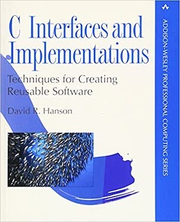

Buy: Amazon
Read: O’Reilly Safari
Explore: Contents Preface Chapter 3 Errata
Reviews: Computing Reviews comp.lang.c.moderated
Related: A Retargetable C CompilerC Interfaces and Implementations: Techniques for Creating Reusable Software (Addison-Wesley Professional Computing Series, 1997, ISBN 0201498413, ISBN-13 9780201498417) advocates a design methodology based on interfaces and their implementations, and it illustrates this methodology by describing 24 interfaces and their implementations in detail. These interfaces include data structures, arithmetic, string processing, and concurrent programming.